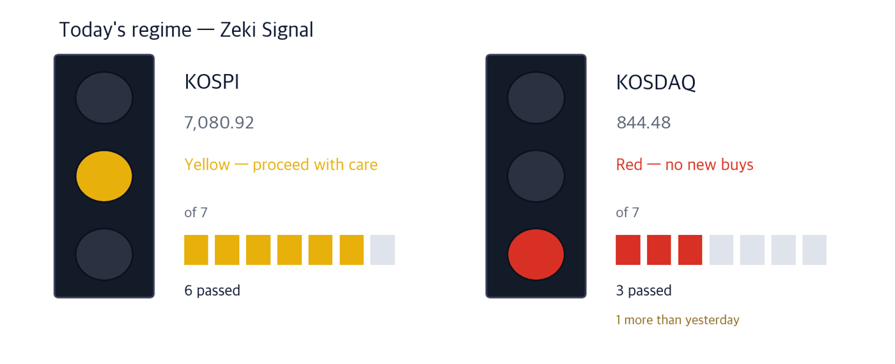

KOSPI 7,080.92 +0.90% | KOSDAQ 844.48 +1.21% | Nasdaq 26,936.04 -1.13% | Zeki Signal Amber |

Green favours buying, amber says wait, red says hold off. The cells count how many of seven conditions are met - more cells mean the advance is broader. KOSPI meets 6 of seven and shows amber; KOSDAQ meets 3 and shows red, one more than the day before.
Wait — what the signal implies.
KOSPI rose 0.90% on the 23rd to 7,080.92, a fourth straight gain and its highest close since July 23. Individual investors sold close to 1 trillion won that day and more than 10 trillion over four sessions (Maeil Business, Sep 24). Seoul is shut on the 24th and 25th for Chuseok and reopens on the 28th.
In New York the Nasdaq fell 1.13% to 26,936.04. Strong activity data pushed the 10-year Treasury yield to 5.12%, the highest since July 2007. Energy was the only S&P 500 sector to rise, with WTI crude up more than 2% to around $92 a barrel (IBD, Sep 23). Seoul will price that in when it reopens on the 28th.
Here is what to do now, before Monday's open.
① If the US stops exporting diesel, Asian refiners fill the gap. President Trump said he is weighing a diesel export ban. On supply worries, Asian diesel margins jumped from $50.4 to $60.4 a barrel in the third week of September (Korea Economic Daily, Sep 24). Diesel is 31.6% of S-Oil's sales, and the stock meets all four of our tests.
② Among cable makers, only Gaon Cable is up 53% this month through the 22nd. Through its US arm it holds long-term supply deals worth up to 5.5 trillion won with about five big tech firms (Korea Economic Daily, Sep 24). Its Zeki Strength is 99; Taihan and Iljin rose only single digits over the same stretch.
③ Solar names jumped for a day, but the trend still points down. OCI Holdings rose 9.57% and Hanwha Solutions 6.38% on the 23rd. Both bounced after steep falls this month, and their trend gauge is below zero, so we did not write them up.
The OECD raised its forecast for Korea's growth this year from 2.6% to 3.7%, the biggest upgrade among the G20 (Maeil Business and Korea Economic Daily, Sep 24).
| Date | What to watch | What it changes |
|---|---|---|
| Sep 24-25 (Thu-Fri) | Seoul shut for Chuseok · US-China and US-Iran talks in New York | Whatever happens in New York is priced in on the 28th |
| Sep 28 (Mon) | First session after the holiday | Whether KOSPI opens above the Sep 23 close of 7,080.92 |
| Sep 29 (Tue) | Samsung Electronics ex-dividend · US August JOLTS | A move in US yields hits the chip heavyweights first |
US retail diesel hit a record $6.53 a gallon, and stocks are about 13% below the five-year average. Ahead of the midterms, President Trump said he told aides to look at keeping diesel at home to cool prices. Treasury Secretary Bessent confirmed that full and partial bans are both being studied (Korea Economic Daily, Sep 24, citing the Financial Times).
The US is one of the largest diesel exporters, shipping about 1.6 million barrels a day in August, up from 1 million in February. Pull that out and Europe and Latin America must buy elsewhere. Diesel is around 30% of sales at Korea's four refiners. But Seoul caps diesel exports at last year's level for the same month, so they cannot take all of the extra demand (Korea Economic Daily, Sep 24).
In our sector ranking at the Sep 23 close, oil and gas is first of the 38 sectors with at least five stocks; three of its five names have a Zeki Strength of 91 or more.
| Close | Day | 1 week | 20 sessions |
|---|---|---|---|
| KRW 155,600 | +0.84% | +8.98% | +10.99% |
| 3 months | Zeki Strength | From high |
|---|---|---|
| +45.85% | 92 | -5.67% |
| Who | S-Oil, a refiner with its plant in Ulsan. |
| What | Diesel made up 31.6% of its first-half sales. |
| When | Trump spoke on the 22nd (US time); on the 23rd S-Oil rose 0.84% to KRW 155,600. |
| Where | Listed on KOSPI, trading about 64.6 billion won a day. |
| Why | If US barrels disappear, Asian diesel fills the gap. |
| How | Higher margins mean more profit from the same crude, and it shows first in quarterly results. |
Gaon Cable rose 53% from September 1 to 22, while Taihan Cable gained 7.48% and Iljin Electric 7.44%. The difference is on the ground in the US: Gaon, a listed unit of LS Cable, supplies data-centre power wiring through its US arm, LSCUS (Korea Economic Daily, Sep 24).
The US Commerce Department is reported to be planning a tariff of about 25% on copper transmission cable, which favours makers with US plants. KB Securities expects LSCUS capacity to double by 2027 (Korea Economic Daily, Sep 24).
In the same ranking, electrical equipment is fourth of 38 sectors; half of its 16 names have a Zeki Strength of 77 or more.
| Close | Day | 1 week | 20 sessions |
|---|---|---|---|
| KRW 318,500 | -0.93% | +28.74% | +87.94% |
| 3 months | Zeki Strength | From high |
|---|---|---|
| +83.71% | 99 | -2.45% |
| Who | Gaon Cable, an LS Cable affiliate making power and telecom cable. |
| What | It holds long-term supply deals worth up to 5.5 trillion won with about five big tech firms. |
| When | It fell 0.93% to KRW 318,500 on the 23rd, after a one-year high on the 21st. |
| Where | Listed on KOSPI, trading about 111.4 billion won a day. |
| Why | Every new AI data centre needs more high-capacity power wiring. |
| How | Building inside the US avoids the tariff, and contracted volume turns into sales as capacity comes on. |
| Close | Day | 1 week | 20 sessions |
|---|---|---|---|
| KRW 81,700 | +6.80% | +16.36% | +18.21% |
| 3 months | Zeki Strength | From high |
|---|---|---|
| +10.39% | 80 | -43.23% |
| Who | Iljin Electric, a maker of cable and transformers. |
| What | The same article cited it as a laggard with a single-digit gain. |
| When | On the 23rd it rose 6.80% to KRW 81,700. |
| Where | Listed on KOSPI, trading about 31.6 billion won a day. |
| Why | When a leader runs ahead, money often moves on to peers serving the same grid demand. |
| How | It rose on 2.96 times its 50-day average volume; the question is whether that continues. |
From December 4 the US will apply a minimum import price and tariffs on solar imports under Section 232. OCI Holdings rose 9.57% and Hanwha Solutions 6.38% on the 23rd (Korea Economic Daily, Sep 24). But that was a one-day bounce after drops of 25.8% and 13.7% this month. Both trend gauges are below zero, and Hanwha's Zeki Strength is 33. We want to see the trend turn before December.
One more set aside for the same reason — Taihan Cable. Same cable theme, but its trend gauge is below zero and foreign and institutional investors were both net sellers over 20 sessions to Sep 23.
Maeil Business (Sep 24) also reported refiners moving into immersion-cooling fluid for AI data centres. But that global market is forecast only to grow fivefold from 400 billion won in 2024 by 2031 — too small to move a refiner's sales, so it is not part of Theme 1.
| Name | ①up over 20 sessions | ②Strength 90+ | ③foreign net buy | ④institutional net buy | Met | Weight of evidence |
|---|---|---|---|---|---|---|
| S-Oil(010950) | O | O | O | O | 4/4 | Well grounded |
| Gaon(000500) | O | O | O | O | 4/4 | Well grounded |
| Iljin(103590) | O | X | X | O | 2/4 | Needs checking |
The four columns: ① up over 20 sessions, ② Zeki Strength 90 or above, ③ foreign net buying over 20 sessions, ④ institutional net buying over 20 sessions. The count of O sets the weight of evidence.
Flow and volume, one row
Volume is the last 5 sessions against the 50-day average. F / I is net buying by foreign and institutional investors over 20 sessions, in millions of shares. |
| Stock | Net shares, 20 days | RS | 20 trading days | As of |
|---|---|---|---|---|
| 316140 | +14,250,151 | 74 | +7.6% | 09-23 |
| 003490 | +11,892,400 | 75 | +11.9% | 09-23 |
| 036540 | +10,901,924 | 94 | +86.1% | 09-23 |
| 257720 | +4,361,765 | 55 | -24.9% | 09-23 |
| 010170 | +3,969,550 | 99 | +31.3% | 09-23 |
| Stock | Net shares, 20 days | RS | 20 trading days | As of |
|---|---|---|---|---|
| 251270 | -11,297,452 | 14 | -8.0% | 09-23 |
| 034220 | -10,705,676 | 10 | -10.4% | 09-23 |
| 005930 | -9,257,897 | 93 | +9.6% | 09-23 |
| 047040 | -8,600,738 | 95 | -7.3% | 09-23 |
| 034020 | -7,026,277 | 47 | -3.6% | 09-23 |
| Stock | Net shares, 20 days | RS | 20 trading days | As of |
|---|---|---|---|---|
| 047050 | +18,601,571 | 49 | +5.7% | 09-23 |
| 005930 | +11,264,009 | 93 | +9.6% | 09-23 |
| 022100 | +9,891,409 | 18 | -3.1% | 09-23 |
| 088980 | +4,762,797 | 26 | +0.3% | 09-23 |
| 088350 | +3,750,900 | 83 | +1.8% | 09-23 |
| Stock | Net shares, 20 days | RS | 20 trading days | As of |
|---|---|---|---|---|
| 257720 | -5,535,116 | 55 | -24.9% | 09-23 |
| 098460 | -2,934,302 | 70 | +1.7% | 09-23 |
| 047040 | -2,886,486 | 95 | -7.3% | 09-23 |
| 009830 | -2,864,532 | 33 | -10.6% | 09-23 |
| 032820 | -2,538,128 | 92 | +5.2% | 09-23 |
Even when the story and the price agree, we check the money separately. The table answers whether volume on the 23rd actually cleared the bar (the 50-day average).
| Name | Cleared? | Flows (to Sep 23) | How to read it |
|---|---|---|---|
| S-Oil(010950) | 0.89x ✗ | F buy · I buy | Wait — flows are buying but the 23rd was thin |
| Gaon Cable(000500) | 0.57x ✗ | F buy · I buy | Wait — flows are buying but the 23rd was thin |
| Iljin Electric(103590) | 2.96x ✓ | F sell · I buy | Caution — foreign and institutions disagree |
Cleared? is Sep 23 volume divided by the 50-day average; above 1x earns a ✓. F / I is foreign / institutional net buying over 20 sessions. Volume is from our price data, which combines the main board and the alternative exchange. The words are not our trades: Watch means price and volume agree, Caution means the two investor groups split or both sold, Wait means the 23rd was thin.
| Weight of evidence | Names | Beat KOSPI | Winners led by | Losers trailed by | All averaged |
|---|---|---|---|---|---|
| Well grounded | 12 | 5 / 12 | +11.25%p | -4.40%p | +2.12%p |
| Grounded | 15 | 6 / 15 | +3.57%p | -8.10%p | -3.44%p |
| Needs checking | 28 | 7 / 28 | +5.92%p | -5.84%p | -2.90%p |
| Thin | 1 | 0 / 1 | none | -0.02%p | -0.02%p |
| No basis | 2 | 0 / 2 | none | -7.71%p | -7.71%p |
| Excluded | 1 | 1 / 1 | +5.93%p | none | +5.93%p |
| Well grounded 12 | +2.12%p | ||||||
| Grounded 15 | −3.44%p | ||||||
| Needs checking 28 | −2.90%p | ||||||
| Thin 1 | −0.02%p | ||||||
| No basis 2 | −7.71%p | ||||||
| Excluded 1 | +5.93%p |
The centre line is KOSPI. Right is ahead, left is behind. The grey number is how many names are in that band.
Of 12 Well grounded names, 5 beat KOSPI. Those 5 led by 11.2%p on average; the 7 that lost trailed by 4.4%p. All together: +2.1%p.
Toward the verdict. Across both markets, 24 of 60 cases have 5 trading days behind them. At 60 we run the test we fixed in advance, once, and print what it says. Until then the table above is interim.
| When | What to watch | What it means |
|---|---|---|
| Open, 09:00-09:30 | Does S-Oil open above its Sep 23 close of KRW 155,600? | Shows how any US diesel decision over the break was priced |
| 10:00 | Is KOSPI holding 7,080.92? | The Sep 23 close; tells us who absorbed the pre-holiday selling |
| Close, 15:00-15:30 | Does Gaon Cable volume top its 50-day average of 269,371? | If so, fresh money is still joining this month's run |
While Seoul is closed, Washington may decide on diesel exports and the US-China talks may conclude. On the 28th we watch whether refiners and cable makers hold their Sep 23 levels. Samsung Electronics goes ex-dividend on the 29th.
This is the Rex Way, ZekiRex™